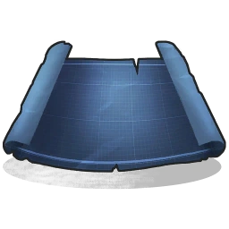

Empezando a construir
Rust, el objeto principal con el cual obtienes el acceso a la construcción es el plano de construcción. Para fabricar este plano són necesarios simplemente 20 de madera, y este tarda en construirse 30 segundos en total. Con el plano, todo lo que construyas será del material mas débil del juego, y luego podrás mejorar estas estructuras, pero de eso hablaremos mas abajo.
